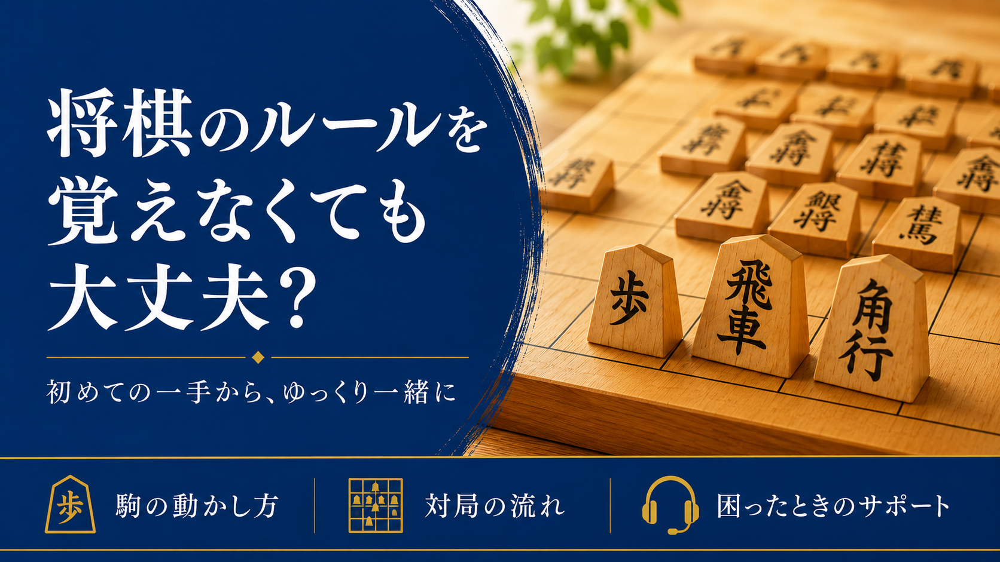
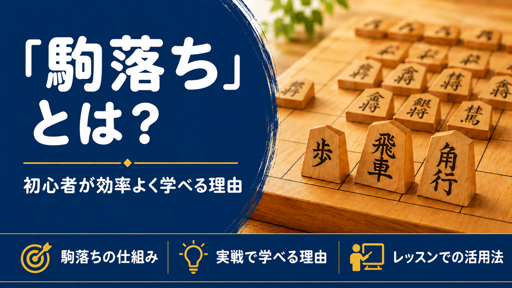
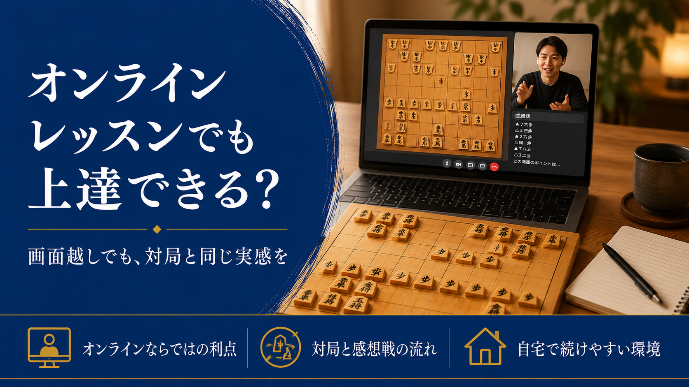

将棋のルールを全部覚えてから始めなくても大丈夫な理由
ルールを覚えるのが大変そうで一歩を踏み出せない方へ。最初からすべて覚えなくても大丈夫な理由をお伝えします。
将棋の勉強法や指導の中で気づいたことなど、初心者から有段者まで役立つ情報を発信していきます。

ルールを覚えるのが大変そうで一歩を踏み出せない方へ。最初からすべて覚えなくても大丈夫な理由をお伝えします。

駒落ちとはどのような仕組みで、なぜ初心者の上達に向いているのかを解説します。

Zoomと81Dojoを使った実際のレッスンの流れを交えてご説明します。

初段を目指す方向けに、級位者と初段の棋力差と、壁を越えるためにやるべきことを解説します。